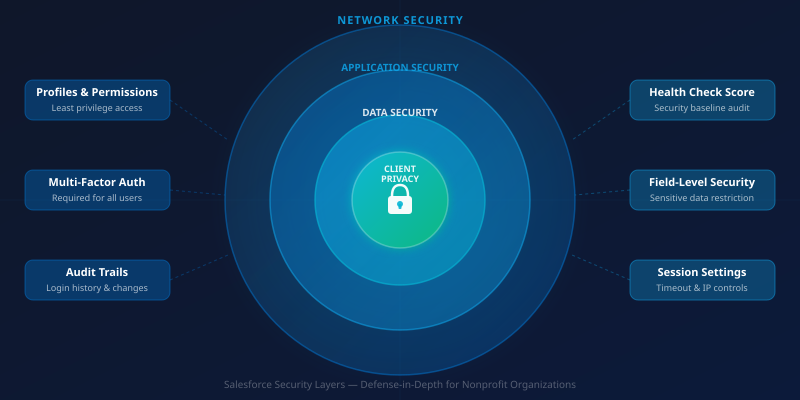

When a food bank collects household income data, immigration status, health information, and family composition to serve clients well, it takes on a serious responsibility. That data exists to help people — not to expose them to harm. Salesforce is a powerful platform for managing it, but a powerful platform configured carelessly is still a liability. Security is not a technical afterthought for nonprofits handling sensitive client information; it is a core expression of your organization's values.
Most Salesforce security breaches in nonprofits don't involve sophisticated hackers. They involve overly permissive user accounts, weak passwords, unreviewed sharing settings, and access that was never removed when a staff member or volunteer departed. The good news is that Salesforce provides robust tools to prevent exactly these scenarios — and most of them require no additional cost, only deliberate configuration.
Start with Profiles and the Principle of Least Privilege

The foundation of Salesforce security is access control: who can see what, and who can do what. Profiles determine the baseline permissions for every user in your org — the objects they can access, the fields they can read or edit, and the system permissions they hold. Permission sets then extend those baselines for specific roles without requiring you to create a proliferation of custom profiles.
The principle of least privilege means every user has exactly the access they need to do their job — no more. This sounds obvious, but it's common to find nonprofit orgs where most staff share a single "Standard User" profile with broad access, because narrowing it down felt like an administrative burden at implementation time. That burden is worth taking on. A case manager does not need access to financial records. A volunteer does not need to edit client contact information. Walk through each role in your organization and map what they actually need — then configure accordingly.
Field-Level Security for Sensitive Data
Field-level security (FLS) is one of Salesforce's most underused protections. Even when a user has access to an object — say, a client intake record — FLS lets you restrict which fields within that record they can see or edit. Income information, household size, health conditions, and immigration-adjacent data should be restricted to staff with a legitimate need to access them.
To configure FLS, navigate to each sensitive field's definition in Setup and review the field accessibility settings for each profile. It's painstaking work the first time, but the result is a far more defensible data architecture. If a staff laptop is compromised or a login credential is stolen, field-level security limits how much of your clients' most sensitive information is actually reachable.
The Health Check Tool: Your Security Baseline
Salesforce's Health Check tool provides a scored assessment of your org's security configuration against Salesforce's recommended baseline. You'll find it in Setup under Security Center. The score runs from 0 to 100, and while no single number tells the complete story, consistently reviewing and improving it is one of the most efficient security investments an admin can make.
Health Check flags issues in categories including password policies, session settings, network access, and certificate configurations. Common findings in nonprofit orgs include: password expiration policies that are too lenient or disabled entirely; session timeout settings that allow users to remain logged in indefinitely; and connected apps with permissions that exceed what those apps require. Address critical and high-risk findings first. Medium-risk items that relate to client data access should be prioritized over those affecting only administrative functions.
Two-Factor Authentication: Non-Negotiable
Multi-factor authentication (MFA) is now required by Salesforce for all users, but enforcement and compliance aren't the same thing. Verify that MFA is actually enabled and active for every user in your org — including service accounts, integration users, and any administrative accounts that may have been grandfathered through older configurations. The Salesforce MFA Enforcement Roadmap provides guidance on which editions are fully enforced versus those that still require manual activation.
For nonprofits, the practical challenge is supporting staff and volunteers who may be less technically comfortable. Invest time in clear onboarding documentation for MFA setup, provide in-person support for those who struggle with authenticator apps, and designate someone responsible for helping users who get locked out. The friction is real but manageable — and far less costly than a compromised account.
Audit Trails and Login History
Salesforce maintains a Setup Audit Trail that records configuration changes made in your org — who changed what, and when. It also maintains Login History, showing every login attempt including source IP address, browser, and authentication method. These logs are invaluable after a security incident, but they're worth reviewing proactively as well.
Set a recurring calendar reminder to review Login History monthly. Look for logins from unfamiliar geographic locations, unusual login times, or failed authentication attempts that suggest a credential stuffing attempt. Review the Audit Trail quarterly to catch configuration changes you didn't authorize. If you use a managed services partner, this audit process also gives you visibility into what changes are being made to your org and why.
Regular Permission Reviews and Offboarding
One of the highest-risk moments in any organization is when a staff member or volunteer departs. A former employee retaining access to client data is both a security risk and, depending on your jurisdiction, a compliance issue. Build a formal offboarding checklist that includes immediate Salesforce account deactivation as a required step — not a nice-to-have. Deactivated accounts retain their record history but cannot log in, which preserves data integrity while eliminating access.
Beyond offboarding, conduct a full permission audit at least annually. Pull a report of all active users, their profiles, permission sets, and last login dates. Accounts that haven't been used in 90 days warrant review. Roles that have accumulated permission sets over time may have drifted far from the original least-privilege intent. Clean, well-maintained access control isn't just good security — it makes your org easier to manage and document for funders and auditors.
When a Security Incident Occurs
Despite best efforts, incidents happen. A staff member clicks a phishing link. A password is reused across services and compromised in an unrelated breach. A former volunteer's account was never deactivated. When you discover a potential security incident, move quickly: immediately deactivate any accounts you believe are compromised, run Login History to establish a timeline of suspicious activity, and document what data may have been accessed. Salesforce's security team is reachable for incidents involving platform-level concerns, and your organization's legal counsel should be notified if client data was accessed without authorization.
The organizations that handle security incidents well are the ones that have thought through their response in advance. A one-page incident response checklist kept in an accessible location — not only in Salesforce itself — means that when the pressure is on, staff have clear steps to follow. Security is not a destination; it's an ongoing practice that reflects how seriously your organization takes its obligation to the people it serves.